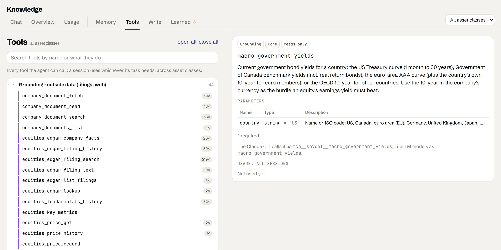

Filings first. Then market data.
The agent reaches outside data through its own tools: filings, market data with fallbacks, macro rates and company documents, every figure cited to where it came from.
Filings first. Market data when it is needed.
The agent reaches outside data through grounding tools served over MCP. Fundamentals come from the filings themselves. Prices and estimates come from a vendor, with a fallback chain so a missing key never stops the work. Hurdle rates come from central banks and statistics offices.
Filing history, 10-K and 10-Q sections, XBRL company facts and full-text search for special situations. Every figure carries its accession number.
First choice for quotes, price history, analyst estimates, fundamentals and the screener. Also supplies company logos.
Quotes, history, ratios and statements for companies outside the SEC, such as TSX names. Unofficial, labelled as such in every citation, and can be switched off.
End-of-day price history with no key. After that, the price you enter yourself.
Government bond yields and inflation, used as the hurdle rate for each company's country.
Annual reports, MD&A and presentations fetched from investor-relations sites, searchable and cited by page.
Every tool, with its own record.
Every tool the agent can call is listed with what it does, its parameters and how often it has been used. Here, the government-yield tool: the US Treasury curve, Bank of Canada benchmarks, the euro-area AAA curve and OECD ten-years, with the ten-year in the company's currency as the hurdle an earnings yield has to beat.
